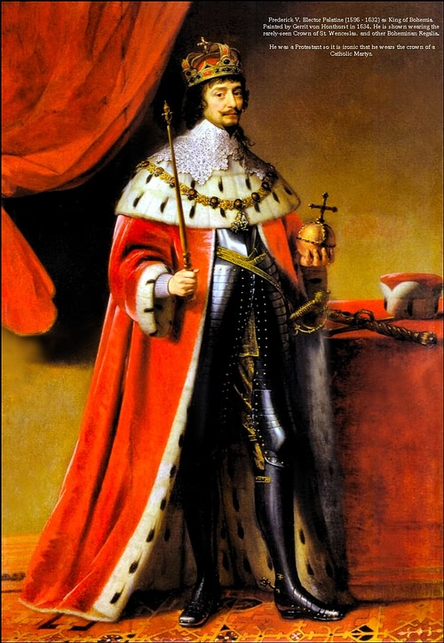

„Hoće li tko za mnom, neka se odreče samoga sebe, neka uzme svoj križ i neka ide za mnom.” (Mt 16,24)

Sveti Vjenceslav (češki: Václav), rođen 907. godine u Pragu, bio je češki knez i unuk svete Ljudmile, koja mu je usadila prve kršćanske vrijednosti. Nakon rane očeve smrti, vladao je pod pritiskom majke Dragomire, čija je nesnošljivost prema kršćanskom odgoju dovela do ubojstva bake Ljudmile. Vjenceslav je unatoč tome ustrajao u uvođenju kršćanskih običaja, nastojeći osnažiti češku državu i njezinu neovisnost o utjecaju susjednog Njemačkog Carstva.
Povijesni izvori jednoglasno ističu njegovu pravednost, milosrđe i duboku osobnu pobožnost. Bio je poznat po tome što je osobno hranio gladne, odijevao siromahe i štitio udovice, a zabilježeno je da je sam uzgajao vinograd kako bi pripremao vino za svetu misu. Iako je planirao predati vlast bratu i postati redovnik u Rimu, pao je kao žrtva zavjere poganskih velikaša i vlastitog brata Boleslava, koji su ga ubili na vratima crkve.
Danas se sveti Vjenceslav štuje kao kamen temeljac češke državnosti i najpopularniji svetac te zemlje. Njegovo tijelo počiva u katedrali sv. Vida u Pragu, a najpoznatiji praški trg, Václavské náměstí, nosi njegovo ime i krasi ga glasoviti konjanički spomenik. Zaštitnik je Češke, Praga, Moravske te proizvođača vina i piva, a njegov se spomendan slavi 28. rujna.